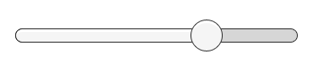
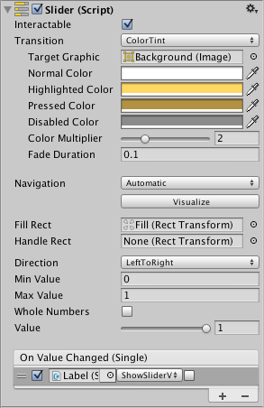

Slider¶
The Slider control allows the user to select a numeric value from a predetermined range by dragging the mouse. Note that the similar ScrollBar control is used for scrolling rather than selecting numeric values. Familiar examples include difficulty settings in games and brightness settings in image editors.


Properties¶
Property: |
Function: |
|---|---|
Interactable |
Will this component accept input? See Interactable. |
Transition |
Properties that determine the way the control responds visually to user actions. See Transition Options. |
Navigation |
Properties that determine the sequence of controls. See Navigation Options. |
Fill Rect |
The graphic used for the fill area of the control. |
Handle Rect |
The graphic used for the sliding “handle” part of the control |
Direction |
The direction in which the slider’s value will increase when the handle is dragged. The options are Left To Right, Right To Left, Bottom To Top and Top To Bottom. |
Min Value |
The value of the slider when the handle is at its extreme lower end (determined by the Direction property). |
Max Value |
The value of the slider when the handle is at its extreme upper end (determined by the Direction property). |
Whole Numbers |
Should the slider be constrained to integer values? |
Value |
Current numeric value of the slider. If the value is set in the inspector it will be used as the initial value, but this will change at runtime when the value changes. |
Events¶
Property: |
Function: |
|---|---|
On Value Changed |
A UnityEvent that is invoked when the current value of the Slider has changed. The event can send the current value as a |
Details¶
The value of a Slider is determined by the position of the handle along its length. The value increases from the Min Value up to the Max Value in proportion to the distance the handle is dragged. The default behaviour is for the slider to increase from left to right but it is also possible to reverse this behavior using the Direction property. You can also set the slider to increase vertically by selecting Bottom To Top or Top To Bottom for the Direction property.
The slider has a single event called On Value Changed that responds as the user drags the handle. The current numeric value of the slider is passed to the function as a float parameter. Typical use cases include:
Choosing a level of difficulty in a game, brightness of a light, etc.
Setting a distance, size, time or angle.